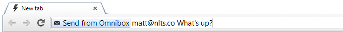

Projects:
Send from Omnibox
Compose an email in Chrome's address bar. Works best with Gmail.
Built using Javascript and the chrome.windows API.
Georgia Tech CS Collective
A newsletter experiment that aims to create a moderated 'switchboard' for project collaboration between Tech students.
Uses Mailchimp's Tinyletter platform; when larger, will probably use Redmine or an in-house solution.
broadcast.to
Send emails to and manage records of members in your service club.
Built using Django and Mailgun.
Idea Catalogue
“Idea Catalogue” is a web application that allows a user to efficiently create, organize, and navigate ideas and files. An “Idea” is a text file that can contain files, hyperlinks, and wiki-like internal links to other Ideas. Ideas and files can be searched, tagged, and shared. A network graph allows the entire catalogue to be displayed and explored within one page, and a tag cloud lets common tags be accessed quickly.
Built using Django, hallo.js, and jQuery.